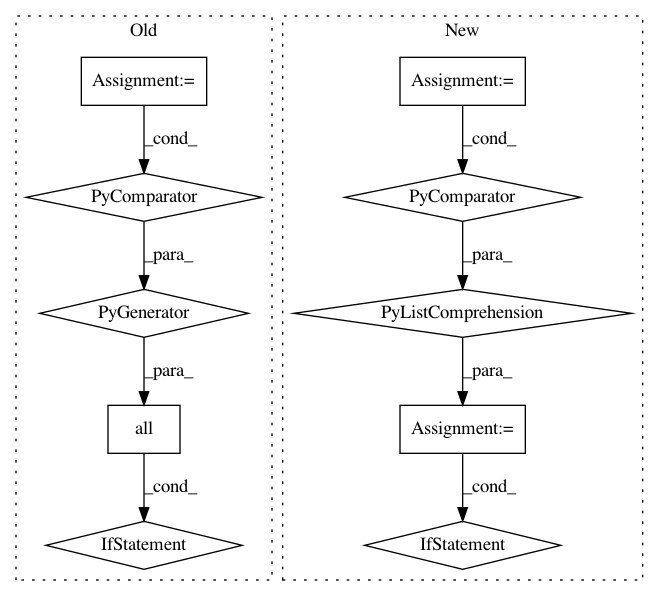

f1fc699be9ce8b249cf5bd670d2200f990a5294d,conceptnet5/vectors/evaluation/analogy.py,,eval_analogies,#Any#,85
Before Change
total = 0
correct = 0
for quad in quads:
if all(term in tframe.index for term in quad):
prompt = quad[:3]
answer = quad[3]
vector = analogy_func(frame, *prompt)
similar = similar_to_vec(tframe, vector)
result = None
for match in similar.index:
if match not in prompt:
result = match
break
if result == answer:
correct += 1
else:
print(
"%s : %s :: %s : %s (should be %s)"
% (quad[0], quad[1], quad[2], result.upper(), answer)
)
total += 1
return correct, total, correct / total
After Change
for word in wordfreq.top_n_list("en", 200000)
]
wrap = VectorSpaceWrapper(frame=frame)
vecs = np.vstack([wrap.get_vector(word) for word in vocab])
tframe = pd.DataFrame(vecs, index=vocab)
total = 0
correct = 0
seen_mistakes = set()
for quad in quads:
prompt = quad[:3]
answer = quad[3]
vector = analogy_func(frame, *prompt)
similar = similar_to_vec(tframe, vector)
result = None
for match in similar.index:
if match not in prompt:
result = match
break
if result == answer:
correct += 1
else:
if result not in seen_mistakes:
print(
"%s : %s :: %s : [%s] (should be %s)"
% (quad[0], quad[1], quad[2], result, answer)
)
seen_mistakes.add(result)
total += 1
low, high = proportion_confint(correct, total)
return pd.Series([correct / total, low, high], index=["acc", "low", "high"])
In pattern: SUPERPATTERN
Frequency: 4
Non-data size: 10
Instances
Project Name: commonsense/conceptnet5
Commit Name: f1fc699be9ce8b249cf5bd670d2200f990a5294d
Time: 2016-09-09
Author: rob@luminoso.com
File Name: conceptnet5/vectors/evaluation/analogy.py
Class Name:
Method Name: eval_analogies
Project Name: probcomp/bayeslite
Commit Name: 671ed2bdfa75d7fe2bebe6f63eb928260e40b7af
Time: 2017-01-30
Author: curlette@mit.edu
File Name: src/guess.py
Class Name:
Method Name: keyable_p
Project Name: IndicoDataSolutions/finetune
Commit Name: 2d41bb82695f1cc18333e6bcba3d1b00befad89e
Time: 2020-01-17
Author: benlt@hotmail.co.uk
File Name: finetune/target_models/sequence_labeling.py
Class Name: SequencePipeline
Method Name: text_to_tokens_mask
Project Name: pantsbuild/pants
Commit Name: 937907d721b8e4e9628b6d13bb59423e4406a5f1
Time: 2015-04-20
Author: itay@twitter.com
File Name: src/python/pants/backend/python/tasks/pytest_run.py
Class Name: PytestRun
Method Name: run_tests